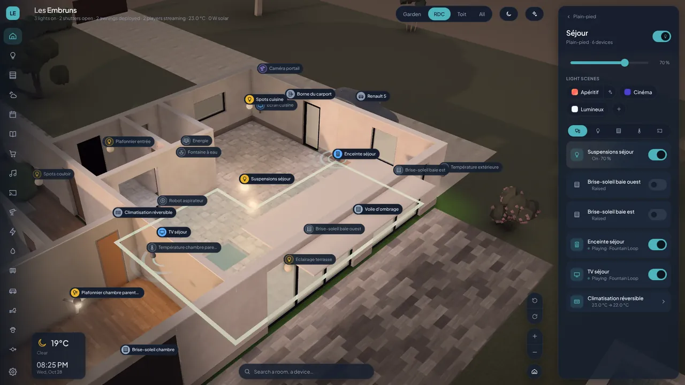

Plusieurs marques
Vos appareils, côte à côte
Lumières Hue, volets Somfy, enceintes Sonos et Cast, caméras Nest, solaire Enphase, voitures Tesla et Renault, robots tondeuses et aspirateurs, distributeurs de croquettes et fontaines. Chaque fabricant est un plugin sur votre serveur : l'app ne connaît que des lumières, des ouvrants et des lecteurs, et les clés d'API n'atteignent jamais le navigateur.